Writing Sample: Instructions
(This is a writing sample for my ENC 3241 class)
The objective of this project was to learn how to explain a complex task through clear, unambiguous language and meaningful illustrations. I chose to document the preparation of Venezuelan Arepas, utilizing a sequential structure and imperative phrasing to ensure the guide is accessible to beginners. The strength of this assignment lies in its technical document design, which balances critical safety warnings with visual aids to guide the user toward a successful result.
How to Prepare Authentic Venezuelan Arepas: A Beginner’s Guide
Arepas are one of the most iconic and delicious staples of Venezuelan cuisine. While you can enjoy them at any hour of the day, they are most traditionally served as a hearty breakfast. A perfect arepa features a satisfyingly crunchy golden crust with a soft, steaming-hot interior. Part of their appeal is their versatility; you can slice them open and stuff them with a variety of ingredients, or even enjoy each half separately with different toppings. Popular filling options include classic choices like ham and cheese, or traditional Venezuelan favorites such as Reina Pepiada (chicken salad with avocado) and Pabellón (shredded beef). These instructions provide a clear, step-by-step guide specifically designed for beginners who have never made arepas before.
Total Time: 1 Hour
MATERIALS
(Makes 4 Arepas; increase water and Harina P.A.N. proportionally for larger batches)
- 1 Plastic bowl
- 1 Grill or 1 electric grill
- 1 Kitchen turner
- 1 Cup of water
- 1 Cup of Harina P.A.N
- Your Choice of filling
- Salt (Optional)
- Butter (Optional)
- 1 egg (Optional)
- Queso llanero (Optional)
Glossary
- Reina pepiada: Chicken salad with avocado
- Pabellon: Shredded beef
- Harina P.A.N: Pre-cooked corn flour
- Queso llanero: White Shredded cheese
- Kitchen Turner: A flat-ended tool used to flip the arepas during the grilling process
Warnings/Cautions/Safety Notes
- Wash Your Hands: Scrub with soap before handling ingredients since the dough is kneaded by hand.
- Prevent Strain: Take breaks during kneading if your arms become tired or sore.
- Avoid Burns: Stay clear of the grill surface, which reaches 400°F.
- Practice Patience: Follow the full cooking times to avoid a raw center
- Handle With Care: Use a napkin when slicing hot Arepas to protect your hands.
“Quick Start” guide
- Wash Hands
- Mix and knead one cup of water with one cup of Harina P.A.N
- Make Arepa Shape
- Place on grill
- Wait and flip
- Eat with your favorite filling
Steps
- Wash your hands with soap
- Pour one cup of water into the plastic bowl.
- Gradually add one cup of harina P.A.N to the water. Add a little and knead. Once it's well mixed and has a smooth consistency, add a little more flour and knead again. Continue kneading for about 2 minutes until the dough feels smooth and free of lumps, and until you've used the entire cup of Harina P.A.N.
- If the dough feels too sticky or not moldable (meaning you can't shape it), it needs more flour. Add more flour little by little until it reaches the correct consistency
- If the dough feels too hard to mold, it needs more water. Add more water little by little until it reaches the correct consistency.
- Preheat your grill or electric grill to 400°F.
- Shape the dough:
- Place a small amount of dough between your two palms and rotate your hands in a circular motion up and down to create a ball shape, about the size of a tennis ball.
- Continue rotating your hands in the same way, but at the same time bring your hands closer together until the dough forms a disc, with a diameter of about 10cm, and with an edge of about the width of a finger.
- Place the shaped arepa in one of your hands, and with the palm of your other hand shape the edges to give the arepa a circular shape.
- Place the Arepa on the grill.
- Repeat the shaping and placing process for the remaining dough. (Steps 5 and 6)
- Cook for 15 minutes, then flip it with a kitchen turner, and cook again for 15 minutes.
- Remove from the grill when ready. The Arepa should have a toasty golden color, and it should be hard and crunchy on the outside.
- Open the Arepa by carefully slicing halfway through the circumference, keeping the knife parallel to the work surface. Stop halfway to ensure the bottom stays connected to hold your fillings.
- Stuff the center with your favorite fillings and enjoy!
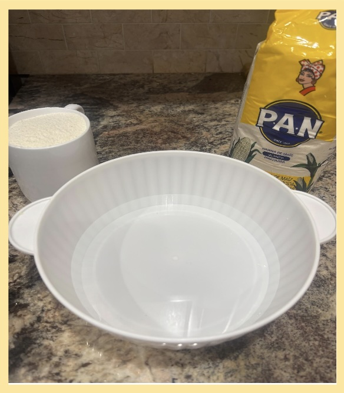
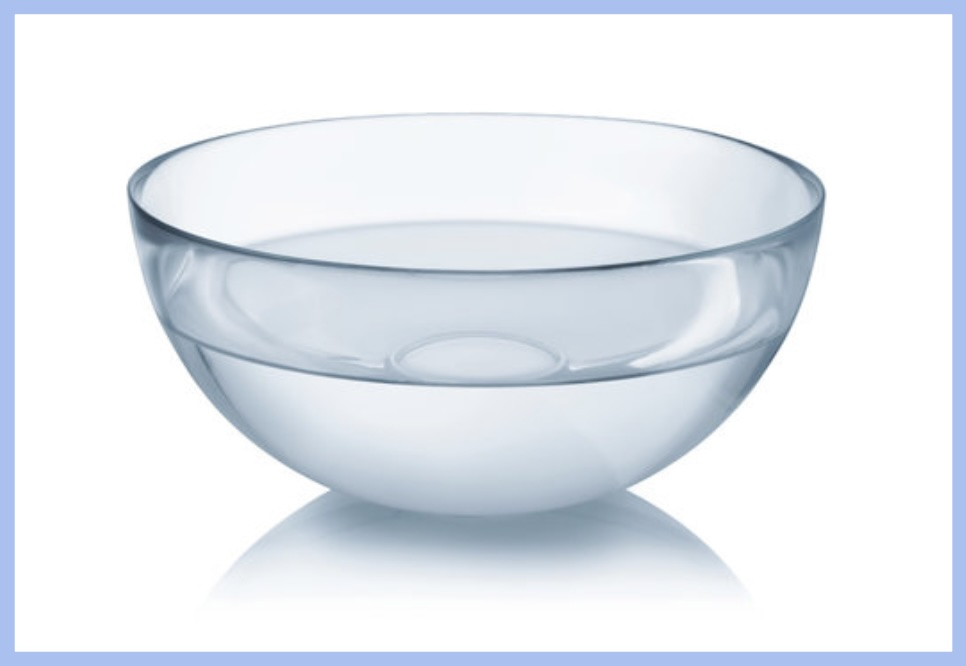
(Figure 1 and 2: Bowls with water)
Optional: Add salt to water for a better taste
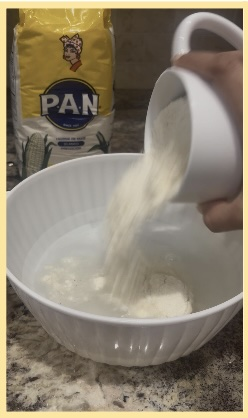
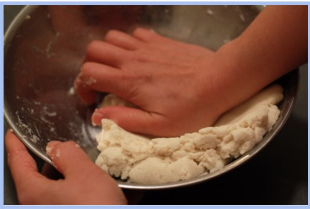
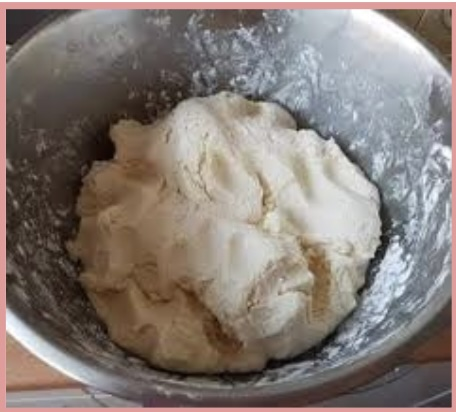
(Figure 3, 4, and 5: Pouring Harina P.A.N into water, kneading, and finished dough)
After two minutes of kneading (Troubleshooting):
Optional: If it feels too hard to mold, instead of water you could add an egg. This makes the dough more moldable and increases its nutritional value.
Optional: Add butter and/or queso llanero to the dough for a better taste.
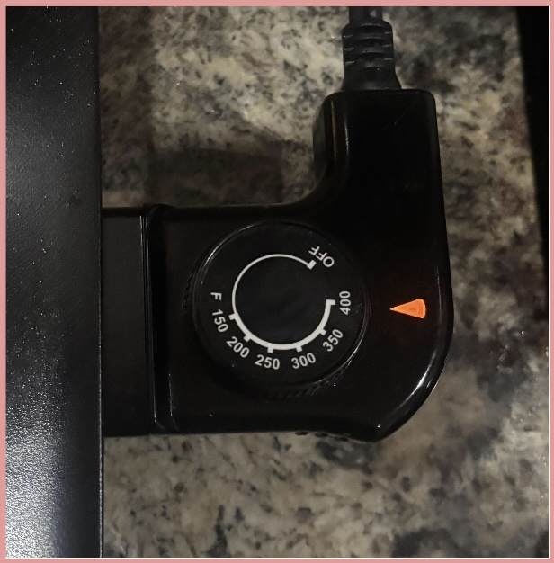
(Figure 6: Grill temperature adjuster)
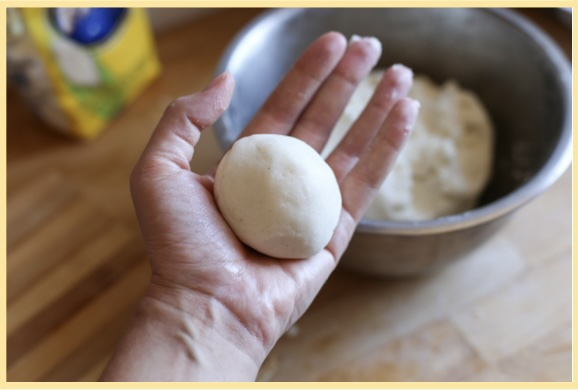
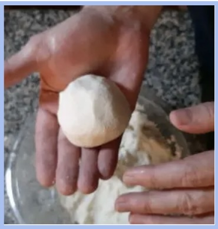
(Figure 7 and 8: Dough in ball shape)
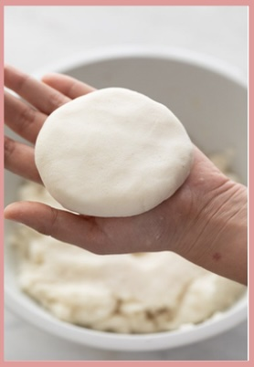
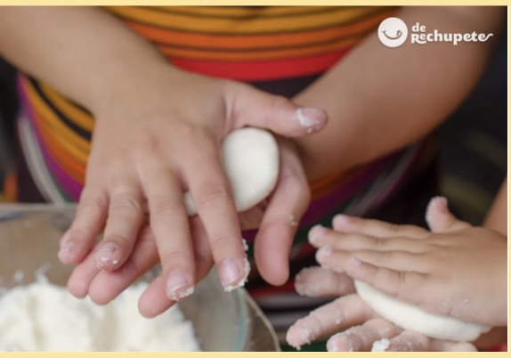
(Figure 9 and 10: Dough in disc shape)
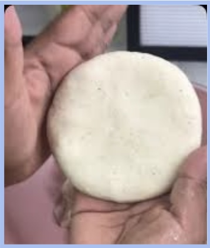
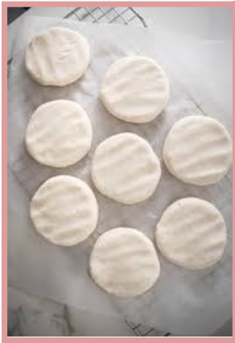
(Figure 11 and 12: Dough in circular shape)
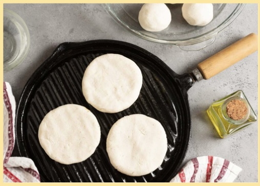
(Figure 13: Arepas on grill)
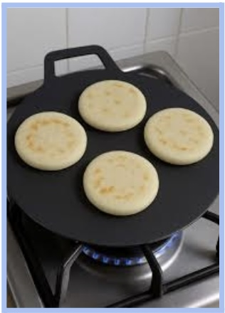
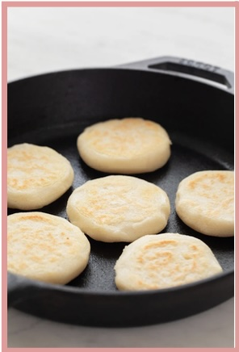
(Figure 14 and 15: Arepas on grill and already cooked on one side)
Tip: Check every 5 minutes in case they are ready before expected.
Tip: While you wait for them to be ready you can start preparing the filling you will have.
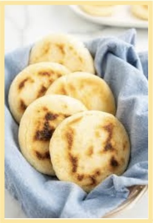
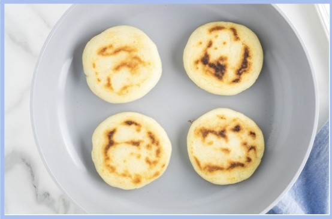
(Figure 16 and 17: Arepas ready to be filled and eaten)
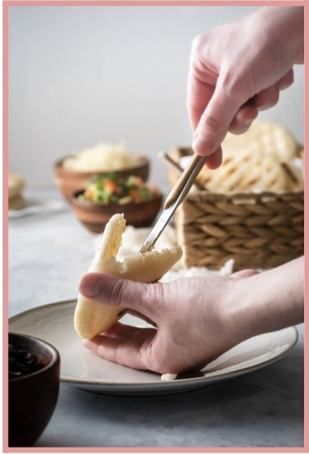
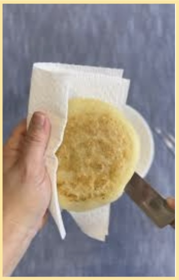
(Figure 18 and 19: Opening Arepas by the edge with a knife)
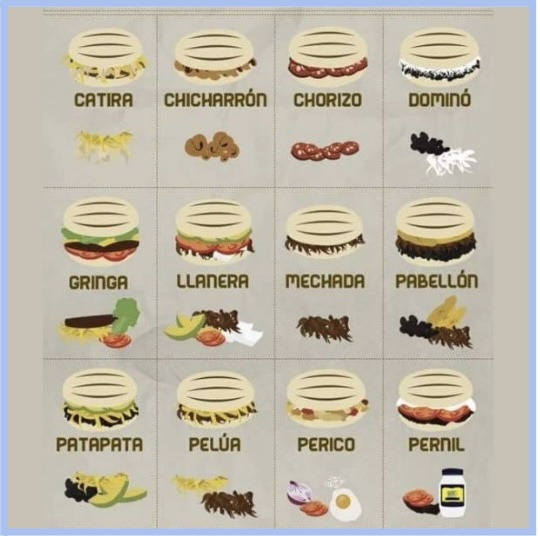
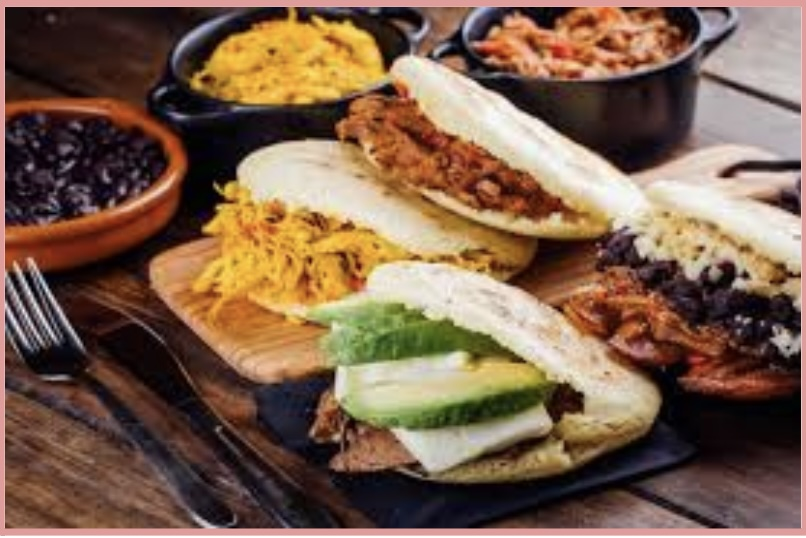
(Figure 20 and 21: Examples of fillings an Arepa can have)
Conclusion
Your Arepa is now ready to be enjoyed. Arepas are best when served immediately while warm, but some Venezuelans do like them cold as well. I encourage you to try making and enjoying them with family or friends, and try as many fillings as you can until you find the one that makes you love Arepas like me. My favorite filling is a salad I make with tuna, tomato, and mayonnaise. If you encounter issues during the process, such as the dough cracking or sticking to your hands, simply adjust the consistency by adding a small amount of water or flour as needed. If you have leftovers, store them in a container in the fridge and reheat them on a grill or on a microwave.